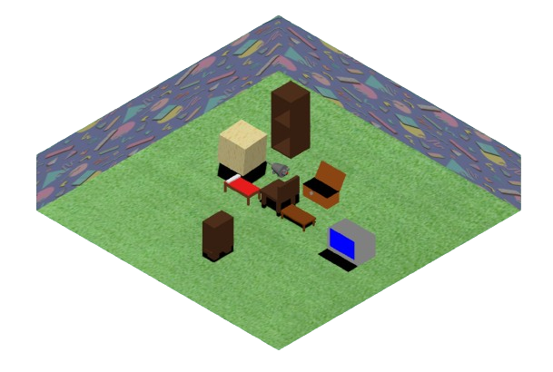

"Take the charming isometric view of habbo hotel and the interactivity and and customization of Club Penguin and give them your iconic Donut touch"
It was like 3 am when the idea came to me and I just felt my heart absolutely leap, it might not seem like that good of an idea to you the reader but to me at the time this was what lit the flame to the empty hole in me at the time. I managed to envision completely how Donutroplis would play out
At the beginning I basically thought to have 75% of the screen to be Donutropis and then the 25% on the right just be a chatting area where you can join different hubs and chat there. That idea eventually didn't work because Imma be honest with you making something like with the clunkiness of three.js scenes would just not be worth the effort as I am pretty certain it would look terrible on every single screen size.
My main idea for interaction was kind of simple. You earn the curreny of sprinkles by working, playing some mini-games or trading/selling items you get. Now the main objective in Donut-troplis is to grow out your apartment and add to it different items you can buy or obtain by chance from different jobs. You can navigate around Donutroplis by visiting different donuts in th map where you can visit the apartments of different players and check out their items.

What my apartment looks like in Donut-Troplis (Ignore the massive floating cheese cube)
I believe its a decent gameplay loop to get people playing, adding value to a bunch of pixels is something every game out there does but the difference here is you can get all of this by just simply playing casually without having to spend your lifesavings or anything. Donutroplis is completely free from head to toe(👅) Now you might ask how is trading done if you don't know how to implement any sort of live service, well uhhh I managed to think of a work around but you might just laugh from the idea but hear me outtt.
So when I first started working on Donutroplis my main idea for it was to be mostly powered by discord in terms of interacting and trading which I know some people might completely dislike, but honestly for the time being I don't really have a better alternative. You simply post a trading offer in the discord channel of the Donutroplis discord server and then have someone hit you up. Once you both decide on what you receiving within the trade, I then get hit up and I manually, yes you heard it yeppp, I manually just go and edit the code... wait hold on I didn't mention how the trading worked, so basically there is this area in donutroplis called the code-input area which is actually an idea taken from Donutplanet and slightly improved upon, so you input a code and then you get sprinkles or items and stuff so I figured I could just edit the code every time there is a new request to create a unqiue code for both users to input to get the trade where they lose an item and then gain a new item. so Yep I manually edit the code every time there is a new request now I know this sounds utterly stupid and to be real with you it is but for the time being thats all I could come up with and I never really planned for Donutroplis to exceed like 50 concurrent members so you can kind of get why I chose that system. You can trade though.
Pst... If you are reading this input this code for a chance to win 2M sprinkles: x0ow2sd9a7
Now sprinkles are the main and only curreny in Donutroplis its basically your bread and butter. So you can earn them from mini games and work but mostly just from work, work in Donutroplis actually is varied into 2 types. An Instant job and then a mini-game job, depending on your performance within the mini-game you could get paid more sprinkles from the job. So then with your obtained sprinkles you can buy new furniture and stuff to add to your apartment, this increases your base level which then unlocks new jobs for you. Get how the job and furniture system go together, I think its cool. Now most of these jobs actually have a percent chance to either give you a furniture item or an inventory item. So for both types of items you can sell them for sprinkles and trade them with other players, now honestly I love that. I absolutely love it. Collecting those rare items in a game and then showing them off to other players just feels good you know.

You can earn a literal bagel from one of the jobs.
Finally, I decided to add something to sort of act as a final objective to Donutroplis and thats the exclusive membership which costs 69,420 sprinkles. You are gonna call me childish I know, I couldn't help it though. Also if you ever manage to reach it you might notice that it is... slightlyyyyyy uhh unfinished. Yeah its just like a cardboard layout that got nothing behind it. I don't really think anyone is actually gonna reach it so I decided to leave it for later and honeslty by that period of time I was completely exhausted from working on Donutroplis.
When I say I wrote a 5 star gournment italian pasta meal in that code I really mean it, If it ever feels slow to you you can completely blame THEE THREE.JS NOT MEEE THE 600 LINES OF CODE IN A SINGLE PAGE HAS NOTHING TO DO WITH IT BEING SLOW. Its just three.js being clunky and all you feel me. For the time being I don't really got that dawg in me to go jumanji diving into the code to try to fix it, cause once again I don't really think Donutroplis is gonna really exceed like 20 members?